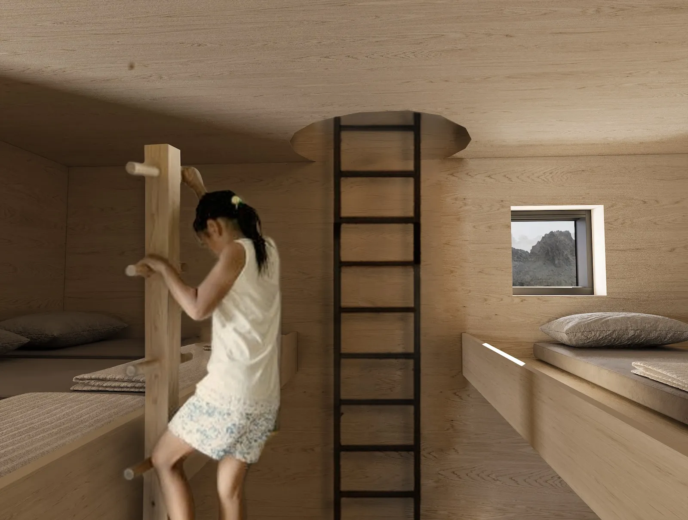
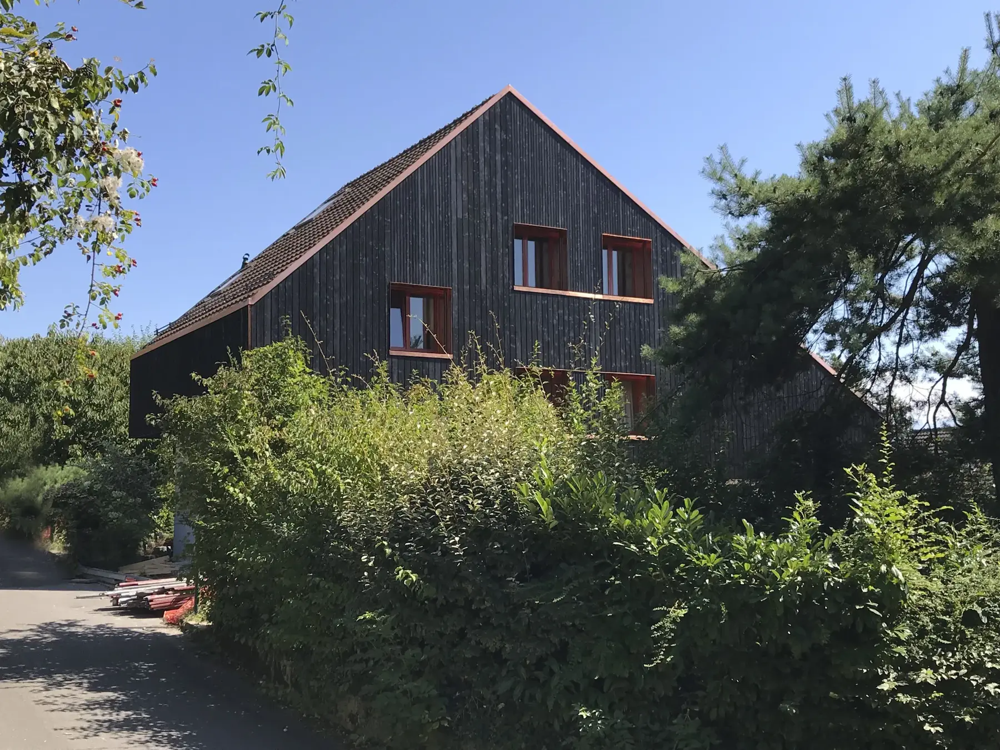
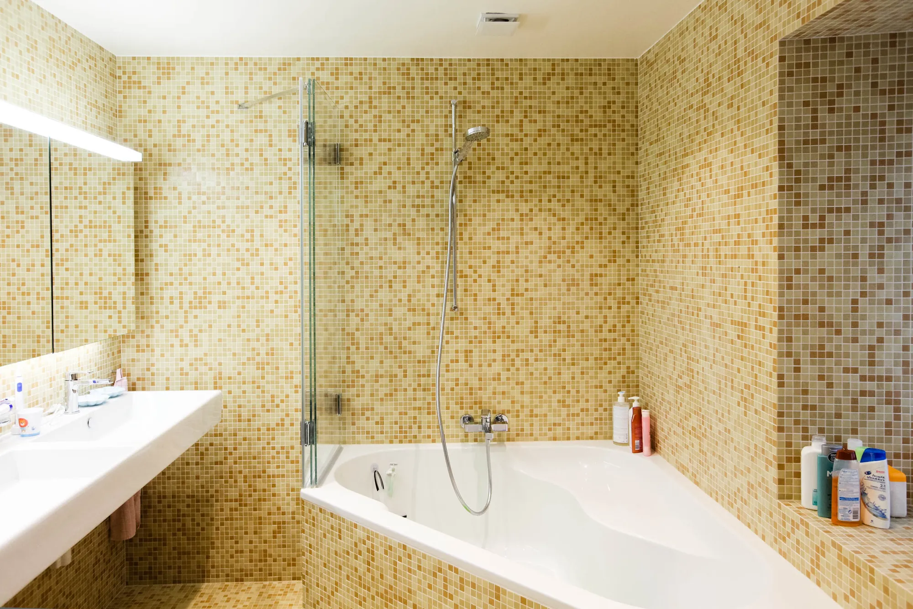
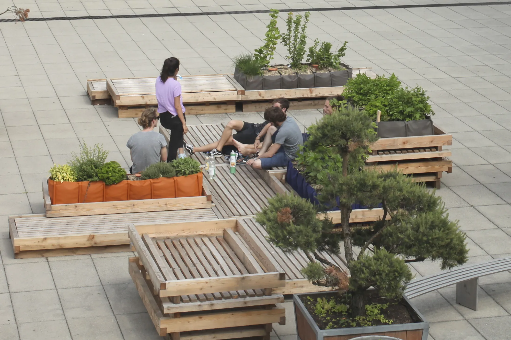
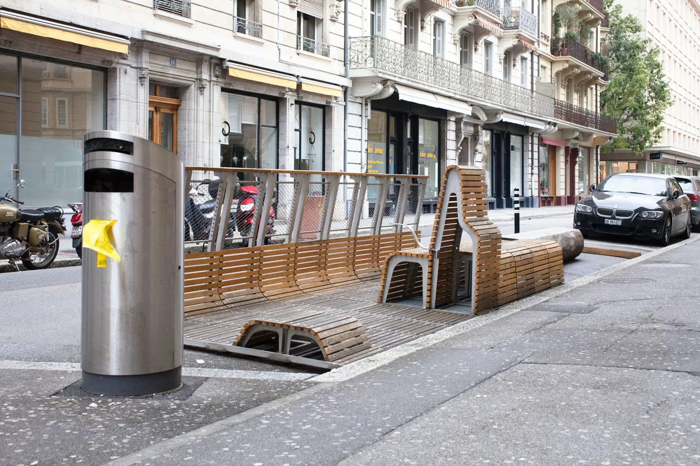
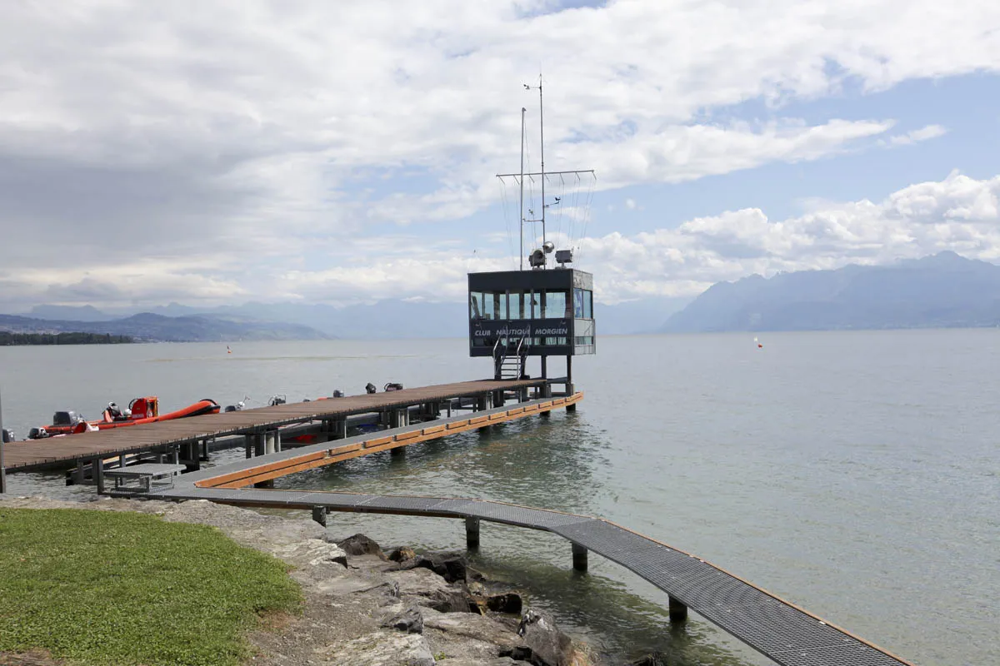

Des matériaux sans artifices, des détails soignés.
Bureau d’architecture à Morges. Rénovation, transformation et construction, de l’avant-projet à la réalisation.

Une vision plus large que l’architecture seule
Fondé en 2018 par Loïc Bernet et Loïc Preitner, le bureau choisit avec soin des matériaux et des techniques écologiques.
Notre architecture est respectueuse de son environnement et laisse s’exprimer les matériaux sans artifices. Cette mise en œuvre simple et réfléchie, avec un soin particulier porté aux détails, génère des atmosphères singulières.
La taille du bureau permet une relation privilégiée avec les mandants. De l’avant-projet jusqu’à la réalisation par des entreprises de la région ou en auto-construction, nous vous accompagnons ponctuellement ou de manière exhaustive.
-
Loïc Bernet
architecte dipl. EPF / SIA
Diplômé de l’EPFL, orientation architecture et durabilité, mineure en design intégré. Lauréat du prix Durabilis en 2017 et 2018.
bernet@lblp.ch -
Loïc Preitner
architecte dipl. EPF / SIA
Diplômé de l’EPFL, orientation architecture et réhabilitation, spécialisation en théorie et techniques du projet de sauvegarde. Lauréat du prix de l’Union patronale des ingénieurs et des architectes vaudois en 2014.
preitner@lblp.ch
Réalisations

Rénovation d’une maison mitoyenne
Projet du bureau

Rénovation à Yens
Yens, 2018
Une attention particulière aux détails et une grande sensibilité à l’existant : planelles en terre cuite poncées et conservées, poutres anciennes sablées.

Campus Farmers
EPFL, 2017-18
Aménagement de la place nord, de la conception à la réalisation par les étudiants : assises de différentes hauteurs et bacs potagers en libre service, modulaires et déplaçables.
Refuge des Bouquetins
Arolla, 2024
Inspiré du pangolin, au-dessus du Haut Glacier d’Arolla, avec un revêtement en écailles de zinc. Pieux vissés, bois laissé brut, récupération des eaux de pluie.

Parklet lausannois
Lausanne, 2019

Ponton à Morges
Projet du bureau
Rénovations, immeubles en bois et en paille, signalétique, concours : la suite des projets est à découvrir avec le bureau.
Ce que le bureau fait
Vous êtes accompagnés ponctuellement ou de manière exhaustive.
Relevés et plans
Le relevé et la réalisation de plans sont les premières étapes de tout projet : une représentation précise de la structure existante.
Images 3D
Des images virtuelles pour découvrir le projet de façon détaillée et réaliste avant sa réalisation.
Rénovation et densification
Optimiser, densifier ou surélever le bâti existant, avec des matériaux et des techniques écologiques.
Dans la presse
- Faire rimer nature et architectureBien vivre
- Parklet à Lausanne24 heures
- Campus FarmersEPFL Magazine
- Prix DurabilisEPFL Magazine
Actualités du bureau
- Coopératives d’habitants : une autre manière d’habiter
- Assainissement des chauffages et boilers électriques
- Rénovation d’une salle de bain adaptée aux seniors
- Un engagement florissantParrainage d’un massif de tulipes à la Fête de la Tulipe de Morges